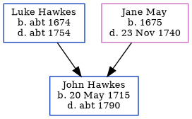

John Hawkes 1715 - c1790
[ Home ] | [ Calendar ] | [ Surnames Index ] | [ Family History ]The son of Luke Hawkes and Jane May, John Hawkes, the seven times great-uncle of <a href="I1.html">Nigel Horne</a>, was born in Fordwich, Kent, England on May 20, 1715.<p>He died <i>c.</i> 1790 in Fordwich<span class="citation">1</span> and was buried there on Jan 8, 1790<span class="citation">1</span>.
Parents
- Luke was born c. 1674
- Jane was born in 1675
Citations
- Kent, England, Tyler Index to Parish Registers, 1538-1874 Online publication - Provo, UT, USA: Ancestry.com Operations, Inc., 2010. This collection was indexed by Ancestry World Archives Project contributors.Original data - Frank Watt Tyler. The Tyler Collection. Canterbury, Kent, England: The Institute of Herald
Family Tree
Generated by Ged2Site. Last updated on Jul 20, 2025